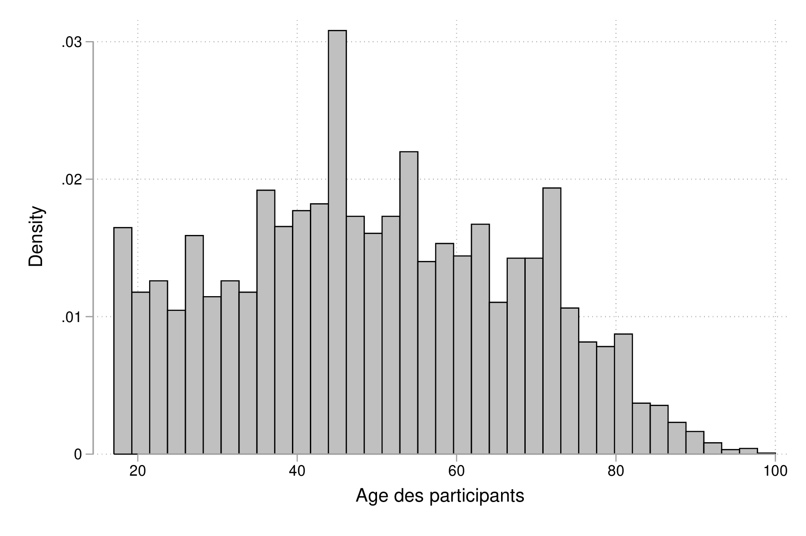
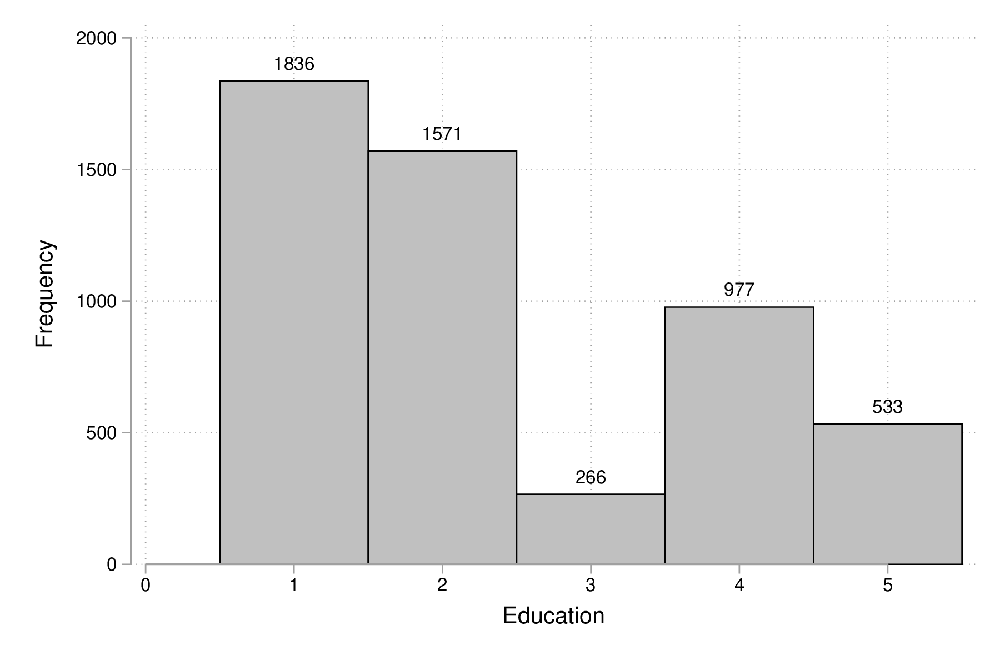
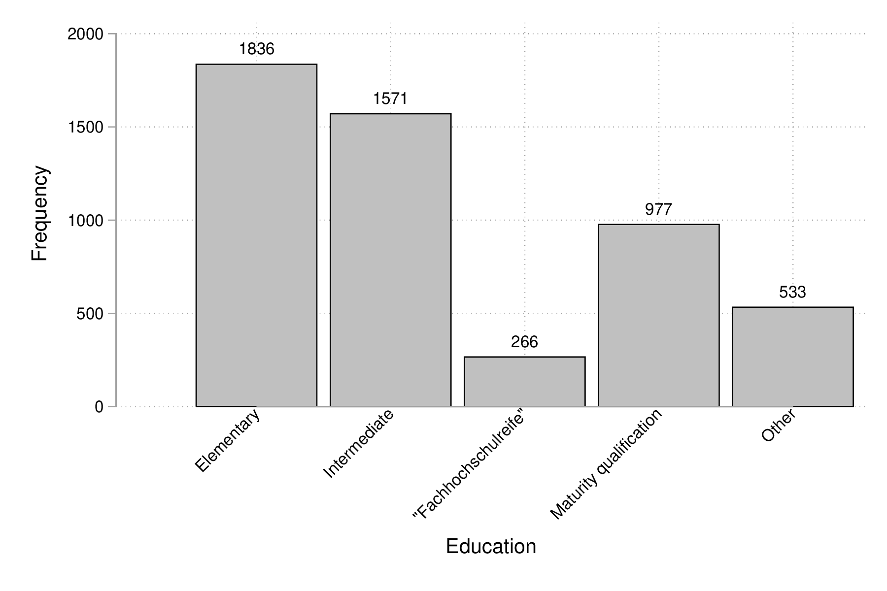

Stata : fonctionnalités graphiques
Table des matières
Introduction
Stata dispose d’un excellent système graphique avec de nombreuses options de personnalisation. La référence reste l’ouvrage de Mitchell, actuellement dans sa 3e édition [2].
Les commandes graphiques peuvent être utilisées pour décrire des données ou en tant que commandes de « post estimation » (par exemple, analyse en composantes principales, graphique de résidus).
Les données qui serviront de base à la plupart des illustrations de ce chapitre portent sur une enquête socio-économique allemande réalisée en 2009 et décrite dans l’ouvrage de Kohler & Kreuter [1]. Les avriables d’intérêt sont les suivantes : ybirth (année de naissance), hhnr2009 (foyer résidentiel), sex (sexe), mar (statut marital), edu (niveau d’éducation), yedu (nombre d’années de formation), voc (niveau secondaire ou université), emp (type d’emploi), egp (catégorie socio professionnelle), income (revenus, en €), size (taille du logement), hhsize (nombre de personnes dans habitation).
set scheme plotplain use data/gsoep09 describe, short describe, simple
set more off set scheme plotplain use data/gsoep09 (SOEP 2009 (Kohler/Kreuter)) describe, short Contains data from data/gsoep09.dta obs: 5,411 SOEP 2009 (Kohler/Kreuter) vars: 65 13 Feb 2012 17:08 size: 568,155 Sorted by: persnr describe, simple persnr income rooms eqplif pic wor10 hhnr2009 hhinc renttype eqpnrj lsat wor11 state hhsize rent hhtyp wor01 wor12 ybirth hhsize0to14 reval area1 wor02 sample sex rel2head eqphea area2 wor03 intnr mar ymove eqpter dvisits wor04 hhnr edu ybuild eqpbas heval wor05 strata yedu condit eqpgar hsat wor06 psu voc dsat eqpalm polint wor07 dweight emp size eqpsol pia wor08 xweights egp seval eqpair pib wor09
Voici un aperçu des données sous forme de listing des premières observations :
list persnr-sex in 1/5
list persnr-sex in 1/5
+-------------------------------------------------------+
| persnr hhnr2009 state ybirth sex |
|-------------------------------------------------------|
1. | 8501 85 N-Rhein-Westfa. 1932 Male |
2. | 8502 85 N-Rhein-Westfa. 1939 Female |
3. | 15001 150 N-Rhein-Westfa. 1946 Male |
4. | 15002 150 N-Rhein-Westfa. 1953 Female |
5. | 18201 111373 Mecklenburg-V. 1969 Male |
+-------------------------------------------------------+
Graphiques univariés de base
Histogrammes et courbes de densité
generate age = 2009 - ybirth summarize age
generate age = 2009 - ybirth
summarize age
Variable | Obs Mean Std. Dev. Min Max
-------------+---------------------------------------------------------
age | 5,411 49.50712 18.12642 17 100
Pour construire un histogramme de cette variable, on utilisera la commande histogram, en précisant l’option freq si l’on souhaite afficher les effectifs (« fréquences » en anglais) plutôt que la densité :
histogram age, xtitle("Age des participants")
graph export "fig-02-histogram-age.pdf", fontface(DroidSans) replace

Figure 1 : Distribution de l’âge des répondants
Notons que cette commande dispose de l’option by() des commandes twoway de sorte qu’il est assez simple de tracer des histogrammes conditionnés sur les valeurs prise par une autre variable, comme illustré ci-après.
label variable age "Age des participants" histogram age, bin(15) by(sex) graph export "fig-02-histogram-age-sex.pdf", fontface(DroidSans) replace

Figure 2 : Distribution de l’âge des répondants selon le sexe
Diagrammes en barres et en points
Bien qu’il existe une commande graphique pour tracer des diagrammes en barres, graph bar, celle-ci s’utilise généralement à partir de données agrégées (voir l’option yvars avec (stat)). On utilise donc la même commande qu’à la section précédente, histogram, en spécifiant l’option discrete, comme illustré ci-dessous :
histogram edu, discrete freq addlabels graph export "fig-02-histogram-edu.pdf", fontface(DroidSans) replace

Figure 3 : Distribution d’effectifs selon les niveaux d’éducation
Comme on peut le voir, la figure 3 est loin d’être parfaite. En particulier, les libellés de l’axe des abscisses sont peu lisibles (à moins d’ajouter une légende indiquant la correspondance entre les codes numériques et les étiquettes des niveaux de la variable edu), et les barres verticales sont juxtaposées de sorte qu’avec l’axe numérique il est facile de prendre ce diagramme pour un histogramme pour données continues. Voici une version qui corrige ces deux aspects, notamment grâce à l’usage de gap() et une spécification plus poussée des étiquettes de l’axe des x :
histogram edu, discrete freq addlabels gap(10) xla(1/5, valuelabel noticks ang(45)) graph export "fig-02-histogram-edu-v2.pdf", fontface(DroidSans) replace

Figure 4 : Distribution d’effectifs selon les niveaux d’éducation
Pour réaliser un tel diagramme en utilisant graph bar, il est nécessaire de travailler avec une variable auxiliaire dans laquelle on accumule les effectifs conditionnels.
graph bar (count) persnr, over(edu) asyvars percent showyvars bargap(10) ytitle("Proportion") legend(off)